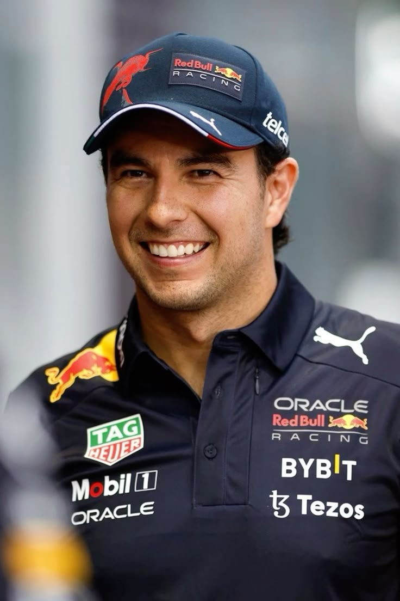

Nacimiento: 26 de enero de 1990 (33 años) en Guadalajara, Jalisco, México
Debut en F1: 2011 con Sauber
Equipos: Sauber (2011-2012), McLaren (2013), Force India/Racing Point (2014-2020), Red Bull (2021-presente)
Nacido y criado en Guadalajara , Pérez comenzó a competir en carreras de karts a los seis años. Tras graduarse a las fórmulas júnior en 2004, Pérez ganó su primer campeonato en la clase nacional de la Serie Internacional de Fórmula 3 Británica de 2007. Avanzó a la Serie GP2 en 2009 , terminando segundo detrás de Pastor Maldonado la temporada siguiente con Addax . Miembro de la Academia de Pilotos de Ferrari desde 2010, Pérez fichó por Sauber en 2011 para asociarse con Kamui Kobayashi , haciendo su debut en la Fórmula Uno en el Gran Premio de Australia , donde ambos fueron descalificados por un alerón trasero ilegal . Pérez encontró un mayor éxito para el equipo en 2012 , logrando su primer podio en Malasia y repitiendo esta hazaña en Canadá e Italia . Para la temporada 2013 , Pérez se trasladó a McLaren , sustituyendo a Lewis Hamilton para asociarse con Jenson Button . Después de una temporada sin podios para McLaren, Pérez firmó con Force India en 2014 . Consiguió cinco podios con el equipo antes de cambiar su nombre a Racing Point a mediados de la temporada 2018.
Pérez se ubicó cuarto en el campeonato con Racing Point en 2020 , logrando su primera victoria en el Gran Premio de Sakhir , tras haber quedado en último lugar al final de la primera vuelta. Reemplazado por Sebastian Vettel en el renombrado Aston Martin para 2021 , Pérez fichó por Red Bull para asociarse con Max Verstappen ; consiguió su primera victoria para el equipo en el Gran Premio de Azerbaiyán . Pérez consiguió más victorias en 2022 en los Grandes Premios de Mónaco y Singapur , entre ellas su primera pole position en Arabia Saudita , terminando la temporada tercero en la general. Pérez terminó segundo detrás de Verstappen en el Campeonato Mundial de Pilotos de 2023 , tras victorias adicionales en Arabia Saudita y Azerbaiyán . Tras una campaña 2024 sin victorias , Pérez y Red Bull acordaron mutuamente rescindir su contrato.
Checo Es conocido por su habilidad para conservar neumáticos y su agresividad en las batallas wheel-to-wheel.
Checo Pérez se ha convertido en un ícono del deporte mexicano:
En 2023 firmó una extensión de contrato con Red Bull hasta 2024, demostrando que sigue siendo un piloto clave para el equipo austriaco en su búsqueda de campeonatos mundiales.